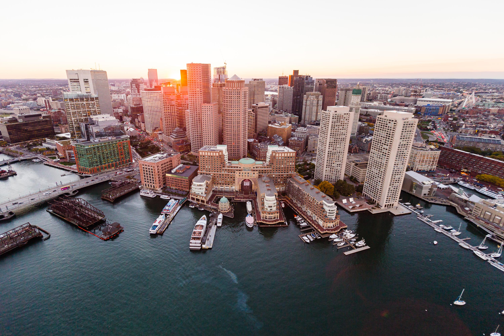

<!doctype html>
<html>
<head>
	<link rel="shortcut icon" href="images/favicon-16x16.png"/>	
<link rel="apple-touch-icon" sizes="180x180" href="/apple-touch-icon.png">
<link rel="icon" type="image/png" sizes="32x32" href="/favicon-32x32.png">
<link rel="icon" type="image/png" sizes="16x16" href="/favicon-16x16.png">
<link rel="manifest" href="/site.webmanifest">
<meta name="msapplication-TileColor" content="#da532c">
<meta name="theme-color" content="#ffffff">
<meta charset="utf-8">
	<title>Home</title>
<link href="css/finalcss.css" rel="stylesheet" type="text/css">
<!--------------------------------->
	
<nav> <a href="index.html">Home</a>
<a href="Food.html">Food</a>
	<a href="Hotels.html">Hotels</a>
	<a href="Museams.html">Museums</a>
	<a href="Schools.html">Schools</a>
	<a href="Sports Teams.html">Sports</a>
	</nav>
	
<!--------------------------------->
	
<header class="index">
  <h1>	Boston</h1>
</header>
	
<!--------------------------------->
	
<aside>
 
	<h2>Fun facts about the capital of Massachusetts</h2>
 </aside>
	
<!--------------------------------->
	
<section>
  <ul>
	  <li>Boston was founded in 1630 by Puritan colonists from England.</li>
		<li>Boston was one of the major centers of the American Revolution. It was the site of the Boston Massacre, the Boston Tea Party, and the Battle of Bunker Hill.</li>
		<li>The Boston Tea Party was a political protest that took place in 1773. Colonists disguised as Native Americans threw 342 chests of tea from British ships into the harbor to protest British taxation.</li>
		<li>The Boston Massacre occurred on March 5, 1770, when British soldiers fired into a crowd of colonists, killing five people. This event helped to fuel the American Revolution.</li>
		<li>The Battle of Bunker Hill took place on June 17, 1775, during the American Revolution. Although the colonists lost the battle, it was a significant moment in the war and helped to boost the morale of the American forces.

</li>
		<li>The Boston Latin School, founded in 1635, is the oldest public school in the United States.

</li>
		<li>The first subway system in the United States was built in Boston in 1897.

</li>
		<li>Paul Revere, a silversmith and patriot, is famous for his midnight ride in 1775 to warn colonists of British troop movements.

</li>
		<li>The USS Constitution, also known as "Old Ironsides," is a wooden-hulled, three-masted frigate that was launched in 1797 and is still commissioned today. It is one of the oldest commissioned warships afloat in the world.

</li>
		<li>Boston played an important role in the abolitionist movement. The Boston African American National Historic Site, the Black Heritage Trail, and the Abiel Smith School are all important landmarks related to the city's role in the fight against slavery.</li>


  </ul>
	<iframe src="https://www.google.com/maps/embed?pb=!1m18!1m12!1m3!1d94410.12845606737!2d-71.05268421626164!3d42.3144473952247!2m3!1f0!2f0!3f0!3m2!1i1024!2i768!4f13.1!3m3!1m2!1s0x89e3652d0d3d311b%3A0x787cbf240162e8a0!2sBoston%2C%20MA!5e0!3m2!1sen!2sus!4v1684768445786!5m2!1sen!2sus" width="600" height="450" style="border:0;" allowfullscreen="" loading="lazy" referrerpolicy="no-referrer-when-downgrade"></iframe>
</section>
	<footer>Copyright 2023. WHS Website Design</footer>
	</head>
</html>
